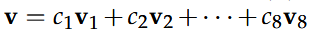

原课程Lessson31～Lesson32课，图像压缩是基于基变换，伪逆
图像压缩
- 图像的向量表示
对于一副512×512的的黑白图像，它有5122个像素，每个像素用8bit的信息来表达， - 压缩的必要性
如果采用标准基(I)，来表示每一张图片，每一张图片都需要5122bit的数据，那所用的带宽太高。如果根据JPEG的标准，换一种基来表达，那么可以更高效的表达、传输数据。
以黑板为例，如果是标准基，那每个图片，都需要那么多的数据，但如果用一种基，其中一个基向量代表亮度，那黑板图片，就可以压缩到很小。
下边整理一下常见的基.
傅里叶基
在JPEG中，使用的是wjk的实部，也就是cos分量。
它将5122的向量，分裂成8×8的小块，然后进行压缩，然后剔除掉系数低于某阈值。
小波基
JPEG2000中采用小波基从上图中可以看出，示例小波基中，每个向量的非零元素在折半递减。
压缩与矩阵
线性代数用来计算从标准基到傅里叶基或者小波基的系数。
故，可得c = W-1x.
上式中，如果选择合适的基向量使W-1 = WT，这样计算效率就会大大提高。
基变换
对于一个在旧基的向量A，可以通过x=Wc关系，转换到新基体系中，转换后的向量是B。
A和B是相似的: B=M-1AM
对于旧基，用v1,v2…v8来表示
A暂时用v来表示： 
转换之后表示为： T(v) = c1T(v1) + c2T(v2) + … +c8T(v8)
如果T(vi) = λixi，这样的变化效率是最高的，但计算一个图像的特征向量，是一件计算量很大的操作，所以不如用佛里叶变换或小波变换。
左逆
左逆是矩阵A：m×n rank(A) = n而言的，川型矩阵
(ATA)-1ATA = I 我们说：
是A 的左逆。
右逆
同样的道理，来类比右逆，右逆是对A: m×n rank(A) = m而言，三型矩阵
是A的右逆。
伪逆
左右逆解决了长方形矩阵的逆的问题，但对于奇异矩阵，如何来找到最佳的逆呢？伪逆。
因为是奇异矩阵，Ax=0存在非0解，存在着null space，也就不可能有逆的存在。伪逆其实建立的是A的row space与column space之间对应关系。A中row space 中的向量与column space中的向量一一对应。证明略。
向量x在row space中 Ax转换到column space上，称之为Ax， 然后再通过A+，再转换回来。
A = UΣVT => A+ = UΣ+VT.
Σ+:1/σ1, 1/σ2, …, 1/σ